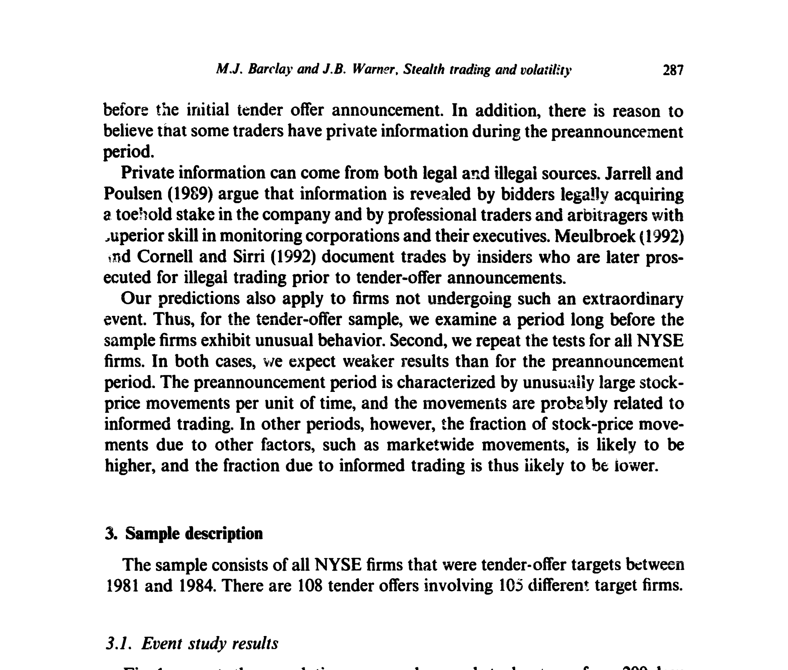
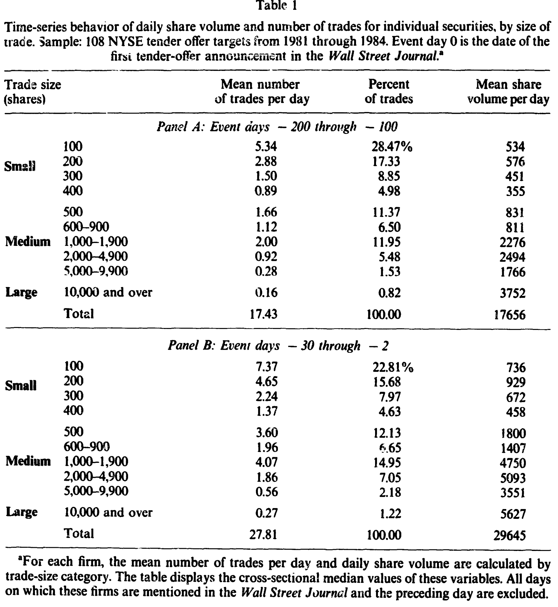
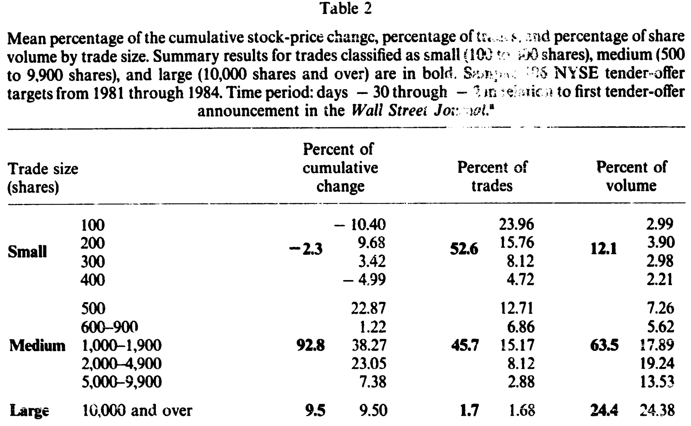
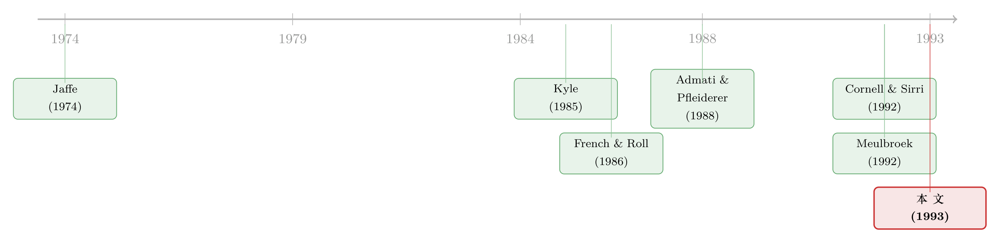

大多数单子都很小，可推动股价的，是那些'不大不小'的
本文读的是 Barclay & Warner (1993, Journal of Financial Economics)：在收购要约公告前的窗口里，一只股票累计价格变动的 92.8% 发生在「中等规模」（500–9,900 股）的交易上，而占交易笔数过半的小单（100–400 股）几乎没贡献任何价格变动。作者由此推断，知情交易者把单子藏在了中等规模里——他们称之为「隐身交易」。
1 一个被忽略的问题：知情者到底下多大的单？
先来设想一个场景。你手里握着一条别人不知道的消息——比如某家公司很快会被收购。你笃定它的股价要涨。现在问题来了：你会怎么买？
一口气吃下十万股，把意图写在脸上？还是细水长流，每次只买一两百股，让自己看起来像个无关紧要的散户？
这听上去像个交易策略的小问题。但 Barclay 和 Warner 在 1993 年这篇论文里指出，它其实牵出了一个金融学的大问题：股价到底是被谁推动的？
近年的实证研究已经反复确认了一件事：股票价格的波动（volatility）主要不是来自公开信息的发布，而是来自交易本身所泄露的私人信息（如 French and Roll 1986；Barclay, Litzenberger, and Warner 1990）。换句话说，价格之所以动，是因为知情交易者在悄悄进场。
可问题在于——既然如此，这些知情者的单子，到底藏在哪个尺寸里？
理论模型对此几乎集体沉默。在最经典的 Kyle (1985) 模型中，知情交易者会下「大单」，一路买到价格触及它的全信息价值为止；Admati and Pfleiderer (1988) 则说他会挑流动性高、容易藏身的时段下手。但这些模型谈的是「何时交易」「交易多少」，唯独 交易规模的选择 是个盲区。实证研究也一样——像 Jaffe (1974) 这类研究只盯着知情者交易「前后」的股价表现，从不问那一笔单子有多大。
于是 Barclay 和 Warner 把这个被绕开的问题正面摆上了桌：哪一种尺寸的交易，在推动价格？
2 一个反直觉的猜想：知情者偏爱「中等单」
接着，一个自然的问题是：凭什么猜知情者会扎堆在中等规模，而不是大单或小单？
作者的论证不靠模型，而靠两个朴素的约束，把知情者「逼」进了中间地带。
先说为什么不是小单。 小单（100–400 股）的利润空间太小了。一个手握真消息的人，不会把自己的全部火力限制在几百股上——那点利润配不上他承担的风险（在内幕交易非法的情形下，还得算上被起诉的概率）。所以小单这一头，可以直接划掉。
再说为什么不是（单笔）大单。 这一步是论证的关键。一笔交易的「价格让步」（price concession）由两部分组成：一部分是给做市商提供流动性的临时补偿，另一部分是这笔交易泄露的新信息所造成的永久冲击——而 两者都随交易规模上升。更要命的是，大宗交易市场（也就是所谓的「楼上市场」，upstairs market）缺乏匿名性（Keim and Madhavan 1991）：一个无法证明自己是「流动性交易者」的大单买家，会被狠狠地索要信息溢价。Scholes (1972)、Mikkelson and Partch (1985) 早已发现，卖方身份会显著影响二级配售的价格冲击——官员、董事这些「疑似知情者」的抛售，价格反应明显更差。
所以一个知情者若想建立大头寸，与其一笔砸下去吃掉巨额价格让步，不如拆成若干笔中等单、分散在时间里铺开，总的价格成本反而更低。
那为什么停在「中等」，不再往下拆？ 因为中等单的价格让步本来就很小，再拆下去就不划算了。作者引了一个很有说服力的数字：NYSE 的《Fact Book》(1991) 显示，3,000 股的成交量在 84.4% 的时候只造成 1/8 点或更小的价格变动。既然中等单几乎不动价，再拆成小单省下来的那点冲击，根本抵不过拖延成本和每笔固定的佣金。
把两头削掉、中间不再细分，结论就浮出来了：
知情者通过多笔中等单去堆出大头寸，又用单笔中等单完成中等头寸——无论从哪个方向走，他们都会集中在中等规模。
这个推断并非凭空。来自内幕交易诉讼的直接证据正好吻合：Cornell and Sirri (1992) 那桩涉及 38 名交易者的案子里，内幕交易有 78.2% 是中等规模，而同一只股票里所有交易只有 38.4% 是中等规模；Meulbroek (1992) 报告，被诉内幕者的日均累积量中位数约占总成交量的 11.3%，对 1984 年的典型 NYSE 公司而言约合 2,000 股——正落在中等区间。
这个联合命题——「知情者集中于中等单 + 股价波动主要由知情交易泄露的私人信息驱动」——就是本文的核心，作者称之为隐身交易假说（stealth trading hypothesis）。名字呼应了 Kyle 那条「伪装」的思路，但作者强调自己的预测更一般：哪怕知情者根本没想伪装，仅仅是财富约束和风险厌恶，就足以把他们推进中等规模。
3 识别策略：怎么把「知情」单独拎出来看？
然后，真正棘手的一步来了：你怎么知道某段时间里「确实有知情者在交易」？毕竟知情交易是看不见的。
作者的办法是挑一个几乎可以确定有人知情的窗口——收购要约目标公司（tender-offer targets）在公告前的那段时间。
这个选择很巧。其一，这些公司在首次公告前股价平均会大涨，说明信息正在被一点点泄进价格；其二，确实有理由相信此时有人握着私人信息——可能合法（如 Jarrell and Poulsen 1989 所说，竞购方的建仓、套利者的专业监控），也可能非法（Meulbroek 1992；Cornell and Sirri 1992 都记录了公告前被诉的内幕交易）。换句话说，这是一个「知情交易浓度异常高」的天然实验场。
具体的样本是 1981–1984 年间所有成为收购要约目标的 NYSE 公司，共 108 起要约、涉及 105 家不同的目标公司。事件日 0 定义为《华尔街日报》首次刊出要约的那天。
事件研究的图景很清楚。两日公告窗口（公告日及其前一日）的累计异常收益平均 15.0%，与 Jensen and Ruback (1983) 的综述一致；而大约一半的总涨幅发生在首次公开公告之前。

Figure 1: presents the cumulative average abnormal stock returns from 200 days
作者把分析聚焦在 公告前第 −30 到 −2 个交易日这一段。这段窗口里累计异常收益平均 16.3%。为了把「私人信息通过交易泄露」和「公开信息发布」两种力量分开，作者剔除了所有这些公司被《华尔街日报》提及的日子及其前一日。剔除之后，公告前窗口的累计异常收益平均降到 9.0%（中位数 7.2%），平均价格变动 1.95 美元（中位数 1.25 美元）——剩下的，就主要是「没有公开新闻、却仍在发生」的价格变动。
值得一提的是，这段时间的成交也明显活跃：非事件期（−200 到 −100 日）中位公司日均 18.4 笔交易、19,284 股；公告前窗口升到 28.8 笔、31,940 股；到公告当日更是暴增至 113 笔、260,200 股。
4 怎么把价格变动「记账」到每个尺寸上？
识别窗口定了，接下来是测量。作者要回答的是：公告前累计的那笔价格变动，有多少应该「记」在每一种尺寸的交易头上？
测量办法朴素得近乎笨拙，却也因此干净。对每一笔交易，定义它带来的价格变动为这笔成交价与上一笔成交价之差。对每家公司，把落在某个尺寸区间内的所有价格变动加总，再除以整个公告前窗口的累计价格变动，就得到这个尺寸「贡献」的百分比。横截面上再做加权平均（权重等于各公司累计价格变动的绝对值）。
用文字写出来就是：某尺寸的贡献占比 = 该尺寸所有交易的逐笔价格变动之和 ÷ 窗口内累计价格变动。开盘交易和隔夜的收盘到开盘价格变动一律剔除。
这里有个聪明的设计——对照基准。如果价格波动其实是由公开信息驱动的，那么只要公开信息不改变交易规模的分布，某尺寸交易「承接」到价格变动的概率就应当正比于该尺寸交易的笔数占比。于是「公开信息假说」给出一个清晰可证伪的预测：
各尺寸贡献的价格变动占比 ≈ 各尺寸的交易笔数占比。
隐身交易假说则给出相反的预测：中等单贡献的价格变动占比，应当显著高于它的笔数占比。两条预测正面对撞，胜负一目了然。
在看结果之前，先看一眼交易规模的分布本身（表 1）。它先给我们泼了盆冷水般的常识：小单才是主流。非事件期里，对中位公司而言，100 股和 200 股是最常见的尺寸，分别占全部交易的 28.4% 和 17.3%；中位交易规模只有 300 股。大单（10,000 股以上）反而稀罕，平均每天只有 0.16 笔（占 0.82%）。

Table 1
也就是说，如果你只盯着「谁交易得最频繁」，答案毫无悬念是小散户。可问题从来不是谁单子多，而是——谁的单子在动价格。
5 反转：92.8% 对 −2.3%
于是反转出现了。
把价格变动按尺寸记账之后，表 2 给出了本文的核心结果。作者把交易分成三档：小（100–400 股）、中（500–9,900 股）、大（10,000 股及以上）。
- 中等单：贡献了累计价格变动的
92.8%，而它们只占交易笔数的45.7%、成交量的63.5%； - 小单：占了交易笔数的
52.6%（过半！），却贡献了−2.3%的累计价格变动——不仅微不足道，甚至是个负数； - 大单：贡献
9.5%，占笔数1.7%、成交量24.4%。

Table 2
这组数字把两条对立的预测一刀切开。公开信息假说说「贡献占比应约等于笔数占比」——可中等单 45.7% 的笔数撬动了 92.8% 的价格变动，小单 52.6% 的笔数却几乎一动未动。这个预测被干净利落地拒绝了。 留下的，正是隐身交易假说所预言的画面：价格是被那些「不大不小」的单子推着走的。
作者还做了稳健性的铺垫——结果对测量方法的选择不敏感，也不像是交易或成交报告的某种机械特征造出来的假象。他们另用十个更细的子区间重做了全部检验，结论在性质上不变。
更妙的是外推。隐身交易假说本不该只在收购公告前成立。于是作者又在两个「平淡」的样本里复检：一是同一批公司在它们出现异常行为很久之前的时段，二是全体 NYSE 公司。两处结果都与隐身交易假说一致，只是弱于公告前窗口——这恰好说得通：在平常时段，价格变动里有更大一块来自市场整体波动等其他因素，知情交易的占比自然被稀释。
把这一切串起来，本文的核心贡献其实是一句话：当我们能确信屋里有知情者时，价格变动几乎全部发生在中等规模的交易上。 这为「知情交易在尺寸上长什么样」提供了第一个系统的、可证伪的实证刻画。
6 文献脉络
这条研究的来路，可以用三股线索拧成一根。
第一股，是「波动从哪来」。 French and Roll (1986) 发现交易时段的方差远高于非交易时段，把矛头指向了「交易本身泄露的私人信息」；Barclay, Litzenberger, and Warner (1990) 进一步坐实了这一点。这一股线索为本文提供了大前提——既然价格波动主要由知情交易驱动，那么「看价格变动落在哪」就等于「看知情交易在哪」。
第二股，是「知情者怎么交易」的理论。 Kyle (1985) 奠定了知情交易的策略性框架——把单子摊到时间里以隐藏信息；Admati and Pfleiderer (1988) 加上了「挑时段」的维度。但正如前文所说，这些模型回避了交易规模。本文正是钻进了这道缝隙，把「规模选择」补了进去，并强调自己的预测无需依赖「伪装」这个动机。
第三股，是「内幕交易」的实证证据。 Jaffe (1974) 是早期代表，但只看股价、不看单子大小；真正给本文递上「弹药」的是 Cornell and Sirri (1992) 与 Meulbroek (1992)——它们第一次让我们看清，被诉的内幕者实际下的单，大多落在中等规模。

本文站在这三股线索的交汇处：用一个「确知有知情者」的窗口，把「波动来自知情交易」与「知情交易集中在中等单」这两件事接上，得出「价格变动集中在中等单」的可检验预测。它也直接启发了后来用交易规模拆解价格发现的一整支文献——比如把成交单拆成大小两摞来看动量（关于这一点，可参见《动量到底是谁干的？——把成交单拆成大小两摞来看》），以及对「到底是哪些交易者的单子在推动股价」的后续追问（参见《谁的单子在悄悄推着股价走？》）。
7 评论与延伸（Q&A + 研究方向）
(a) 几个可能的疑问
Q：这不就是「大单推动价格」的老结论吗，有什么新意？
恰恰相反，本文的发现是「大单不是主角」。按单笔价格冲击算，大单确实冲击最大（这是 Easley and O'Hara 1987、Holthausen 等 1987 早就证明的）；但本文问的是累计价格变动如何在尺寸间分配，这同时取决于每笔的冲击和该尺寸的笔数分布。结果是：大单虽冲击大但太稀少（仅
1.7%笔数），中等单冲击适中又足够多，于是中等单贡献了92.8%。区分「单笔冲击」与「累计贡献」正是本文的关键洞见。
Q：中等单贡献占比高，会不会只是因为它成交量大？
这正是公开信息假说要检验的事，而它被拒绝了。中等单占成交量
63.5%、占笔数45.7%，却撬动了92.8%的价格变动——贡献占比明显高于它在量或笔数上的份额；小单占了过半笔数却贡献−2.3%。所以不是「量大所以动得多」，而是中等单每单位更有信息含量。
Q：小单贡献为什么会是负的（−2.3%）？
这正是隐身交易假说会预期的「噪声」。小单多由无信息的流动性交易者发出，其价格变动往往是围绕真实价格的来回抖动（买卖价差的弹跳等），在加总后不仅不贡献趋势、还可能轻微反向。一个接近零、甚至略负的数字，恰恰说明小单里几乎没有方向性的信息。
Q：用「这笔成交价减上一笔成交价」来记账，会不会被买卖价差的弹跳污染？
这是合理的担忧——bid-ask bounce 确实会给逐笔价格变动加进噪声。作者声称结果对测量程序不敏感、且不像机械特征所致，并剔除了开盘交易；但在 1993 年的数据条件下，他们无法像后来的研究那样用 Lee-Ready 之类的算法把成交方向和价差成分干净地剥离。这是本文识别上最值得追问的地方之一。
Q：收购要约样本会不会太特殊，结论推不出去？
作者自己也意识到了，所以补做了「同一批公司的平淡时段」和「全体 NYSE 公司」两个样本，结论方向一致、只是更弱。弱化本身是符合预期的（平时知情交易占比更低）。不过收购前窗口里知情者的「身份」与动机（套利者、竞购方、内幕者）相当特殊，把结论推广到日常的、分散的知情交易时仍需谨慎。
Q：这对监管或对「读盘」有什么含义？
一个直接含义是：盯着大宗交易去抓内幕，可能恰恰抓错了地方——真正的知情者更可能藏在不起眼的中等单里（这正是「隐身」二字的由来）。对市场参与者而言，它提示「中等规模订单流」可能比大单更能预示价格走向。
(b) 几个可能的研究问题与提案
1. 把「隐身交易」搬到公司债市场。
【经济故事】公司债是场外、交易稀疏、知情者（如持有非公开信息的机构）众多的市场。如果隐身逻辑成立，那么在评级下调或违约消息泄露前，价格发现是否也集中在「中等票面金额」的交易上？这能把市场微观结构里的知情交易刻画从股票扩展到信用市场。
【可行性】中（偏可行）。TRACE 提供了逐笔成交价与规模（注意大额交易的截顶报告），可借鉴本文的「按规模记账」框架。难点在于债券成交太稀、上一笔价格间隔长，逐笔价差噪声更大；识别上可借「评级事件 / 违约前窗口」作为「确知有知情者」的样本，思路与本文一脉相承。
2. 外资持有人是不是「隐身交易者」？
【经济故事】关于外资究竟是消息灵通的猎手还是处于信息劣势，争议已久（参见《外资真有「信息劣势」吗？》）。若外资确有信息优势，他们的交易规模分布是否也呈「中等单集中」？反过来，若他们被迫拆大单避税或规避持股限制，规模分布会被扭曲成什么样？
【可行性】中。需要带交易者身份标签的逐笔订单簿（如韩国、台湾交易所的账户级数据曾被多篇文献使用）。识别策略：在已知的信息事件窗口内，比较外资与本地交易者的「规模—价格贡献」曲线。数据可得性是主要瓶颈。
3. 高频时代，「中等单」的定义还稳定吗？
【经济故事】本文的尺寸阈值（500–9,900 股）是 1980 年代的产物。算法交易普及后，知情者很可能把单子切得更碎以躲避检测，「隐身」的最优尺寸可能整体下移。检验阈值如何随交易技术演变，本身就是对隐身假说机制的一次再确认。
【可行性】高。现代逐笔数据（TAQ、交易所毫秒级数据）齐备，可直接复刻本文的「价格贡献—规模」分解，并按年代滚动估计「贡献最集中」的规模区间。识别清晰、数据现成，是一个 doable 的复制兼扩展。
4. 流动性枯竭时，谁在推动价格？
【经济故事】把本文的尺寸分解嫁接到流动性危机窗口（如 2020 年 3 月的公司债市场，参见《差点死掉的那个市场》）。当流动性蒸发，价格发现是更集中于少数大单（被迫抛售），还是反而更依赖中等单？这能把「隐身交易」与「火线甩卖」两条线索接到一起。
【可行性】中。数据用 TRACE / 股票逐笔成交均可；难点在于把「知情驱动」与「流动性冲击驱动」的价格变动分离开——可能需要结合 CDS、基金赎回流等外生冲击作为工具，识别上不轻松但有先例可循。
8 我的判断
本文的贡献是问对了一个被所有人绕开的问题，并用一个近乎极简的测量框架给出了惊人干净的答案。92.8% 对 −2.3% 这组对比的说服力，不在于统计精度，而在于它把「公开信息假说」逼到了一个可证伪的角落并将其拒绝。三十年后回看，「隐身交易」已经成了市场微观结构里的一个标准概念，这本身就说明了它的分量。
但识别上仍有两处值得保留。其一，买卖价差弹跳。用逐笔价差记账，天然会把价差成分混进「价格变动」，而小单更密集地踩在买卖价差上——小单贡献接近零甚至为负，究竟有多少是「无信息」的真相，有多少是价差噪声在加总后相互抵消的人为结果，本文受限于当时的数据和方法，没能彻底厘清。其二，样本的特殊性。收购前窗口是个知情浓度极高、且知情者身份很特定的环境，把结论外推到日常的、动机各异的知情交易时，机制未必照搬。
我最想看到的后续，是带交易者身份的账户级数据下的重检：直接看「谁」下了「多大」的单，而不是从价格变动反推。如今交易所级别的逐笔数据已让这件事变得可行——既能复刻本文、又能把「隐身」的最优尺寸如何随交易技术与市场结构演变这件事，真正量出来。
参考文献
Admati, Anat R. and Paul Pfleiderer (1988). A theory of intraday trading patterns: Volume and price variability. Review of Financial Studies 1, 3–40.
Barclay, Michael J., Robert H. Litzenberger, and Jerold B. Warner (1990). Private information, trading volume, and stock-return variances. Review of Financial Studies 3, 233–253.
Barclay, Michael J. and Jerold B. Warner (1993). Stealth trading and volatility: Which trades move prices? Journal of Financial Economics 34, 281–305.
Cornell, Bradford and Erik Sirri (1992). The reaction of investors and stock prices to insider trading. Journal of Finance 47, 1031–1059.
Easley, David and Maureen O'Hara (1987). Price, trade size, and information in securities markets. Journal of Financial Economics 19, 113–138.
French, Kenneth R. and Richard Roll (1986). Stock-return variances: The arrival of information and the reaction of traders. Journal of Financial Economics 17, 5–26.
Holthausen, Robert, Richard Leftwich, and David Mayers (1987). The effect of large block transactions on security prices: A cross-sectional analysis. Journal of Financial Economics 19, 237–267.
Jaffe, Jeffrey (1974). Special information and insider trading. Journal of Business 47, 410–428.
Jarrell, Gregg A. and Annette B. Poulsen (1989). Stock trading before the announcement of tender offers. Journal of Law, Economics, and Organization 5, 225–248.
Jensen, Michael C. and Richard S. Ruback (1983). The market for corporate control: The scientific evidence. Journal of Financial Economics 11, 5–50.
Keim, Donald B. and Ananth Madhavan (1991). The upstairs market for large-block transactions: Analysis and measurement of price effects. Working paper, The Wharton School, University of Pennsylvania.
Kyle, Albert S. (1985). Continuous auctions and insider trading. Econometrica 53, 1315–1335.
Meulbroek, Lisa (1992). An empirical analysis of illegal insider trading. Journal of Finance 47, 1661–1699.
Mikkelson, Wayne H. and Megan Partch (1985). Stock price effects and costs of secondary distributions. Journal of Financial Economics 14, 165–194.
Scholes, Myron (1972). The market for securities: Substitution versus price pressure and the effects of information on share price. Journal of Business 45, 179–211.